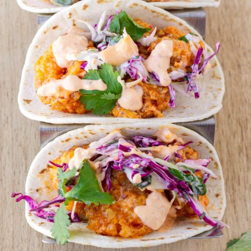

Boom Boom Shrimp Tacos

Description
These fresh and spicy shrimp tacos are elevated with crunchy cabbage, cilantro, lime juice, and sweet and spicy boom boom sauce.
Ingredients
- Breaded Shrimp
- Shredded Cabbage
- Fresh Cilantro
- Lime Wedges
- Tortilla Wraps
- 1/2 cup Mayonnaise
- 2 tbsp Chilli Sauce
- 3 tsp Sriracha Sauce
- 1/2 tsp Minced Garlic
- 1/2 tsp Garlic Powder
- 1/2 tsp Cayenne Pepper
Steps
- To make boom boom sauce, mix mayonnaise, chilli sauce, sriracha sauce, minced garlic, garlic powder, and cayenne pepper in a bowl, then refrigerate for at least 30 minutes
- Fry breaded shrimp until done
- Place fried shrimp on tortilla wrap, cover with shredded cabbage, cilantro, and boom boom sauce, then squeeze a lime wedge over the contents of the tortilla wrap, then roll up wrap and serve